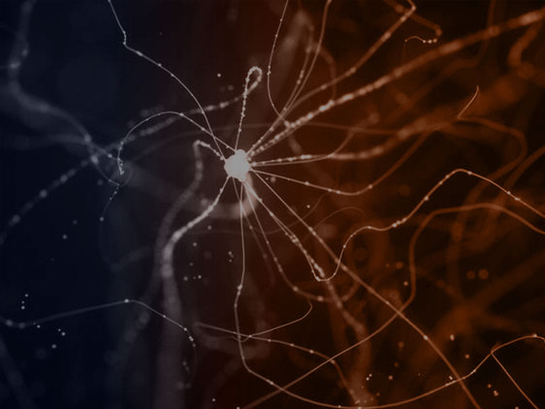

Estimados miembros de la Sociedad Chilena de Neurociencia:
Por la presente me es grato informarle respecto al proceso de Elección del Nuevo Directorio de la Sociedad Chilena de Neurociencia (SCN) para el periodo 2023-2025:
El Directorio de la SCN está constituido por 7 socios, los cuales deben ser elegidos entre los socios regulares. Para renovar nuestra directiva, y de acuerdo con los estatutos de la SCN, se ha nombrado una Comisión Tricel que está constituida por 2 Directores salientes del actual Directorio (los Dres. Alexies Dagnino y Pablo Henny) y 3 socios (La Dra. Magdalena Snhueza y los Drs. Pedro Maldonado y Jaime Eugenin ). El Dr. Pablo Henny oficiará de presidente del Tricel. Podrán ser candidatos todos quienes tengan su pago de membresía al día (pago correspondiente a los años 2021-2022)
Como 1era etapa en el proceso de elecciones, les solicitamos que vía correo electrónico manifiesten al Dr. Pablo Henny su interés de ser candidatos para formar parte del nuevo Directorio de la SCN, adjuntando una carta breve en la cual manifiesten explícitamente su compromiso de participar en dicho Directorio por un plazo de 3 años, en caso de obtener una de las 7 mayorías. Esta manifestación de interés y carta compromiso debe enviarse al correo electrónico de nuestra sociedad (sociedadchilenaneurociencia@gmail.com).
Se recibirán las candidaturas hasta el día 30 de septiembre del 2022
Entre el 10 y 16 de octubre, el Tricel informará el listado de candidatos y preparará el proceso de votación. Tendrán derecho a voto, los socios regulares con su membresía al día. Se enviará el voto correspondiente y cada socio podrá votar por 5 candidatos de su preferencia. El Tricel nombrará un apoderado por Institución, quien colectará los votos y los entregará al Tricel. El proceso de votación se extenderá desde el 20 de octubre hasta el día 30 de octubre del 2022. El Tricel procederá a la cuenta de votos y comunicará el resultado oficial del proceso de votación a todos los socios a más tardar el día 15 de Noviembre del 2022. El Directorio elegido deberá seleccionar entre sus miembros quien ocupará el cargo de Presidente, Vicepresidente, tesorero y secretario general. El nuevo directorio asumirá en propiedad a partir de la asamblea general de socios a realizarse durante la Reunión Anual de la Sociedad Chilena de Neurociencia a efectuarse en Pucón, en el mes de diciembre.
Incentivamos a todos los socios a participar con entusiasmo en el proceso de renovación de la directiva de manera de que cada uno se sienta parte del desafío futuro de robustecer la SCN.
Descargar llamado en PDF aquí
Archivo: publicado originalmente el 18 de agosto de 2022 en el sitio anterior de la Sociedad (https://socneurociencia.cl/2022/08/18/llamado-a-elecciones-directorio-scn-2023-2025/).